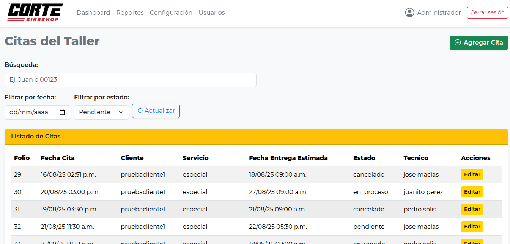

Gestión de Clientes, Reservaciones y Diagnóstico Técnico
Proyecto en fase de desarrollo activo

Resumen del Proyecto
CorteBike es una solución integral diseñada para optimizar la operativa de talleres especializados en ciclismo. La plataforma automatiza el flujo de registro de citas de mantenimiento, organiza los tiempos de entrega basados en la complejidad del servicio (básico, completo o premier) y mantiene un repositorio histórico centralizado de clientes y servicios realizados.